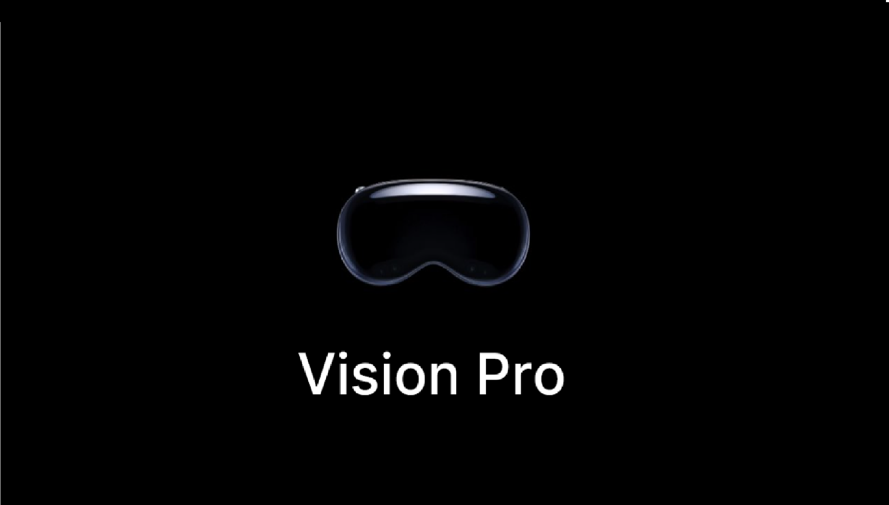

Bonjour, je suis
Zacharie Devouche
Développeur FullStack
Première Année de BTS SIO SLAM
Profil
Présentation :
Actuellement étudiant en première année d'un BTS SIO SLAM à l'école IPSSI Paris. Toujours en cours d'étude, je vous propose sur ce portfolio de retrouver ci-dessous mon parcours d'étude et les différents projets professionnels que j'ai pu entreprendre au sein de ma carrière. Je suis actuellement à la recherche d'une alternance à compter de septembre. Je suis intéressé par le développement web et suis en constante recherche de nouvelles technologies et de nouvelles méthodes de développement.
Compétences acquises:


Brevet de Technicien Supérieur | Services Informatiques aux Organisations
Le Brevet de Technicien Supérieur - Services Informatiques aux Organisations (BTS SIO) s'adresse à ceux qui souhaitent se former en deux ans aux métiers d'administrateur réseau ou de développeur, afin d'intégrer directement le marché du travail ou de poursuivre des études dans le domaine de l'informatique.
Les options du BTS SIO :
Veilles Technologiques
Voici les différentes veilles technologiques que j'ai pu réaliser pendant mon parcours au sein de l'IPSSI.
Apple Vision Pro
Plongez dans l'avenir avec l'Apple Vision Pro, une révolution technologique qui redéfinit la réalité augmentée. Grâce à une fusion parfaite de puissance et d'élégance, l'Apple Vision Pro transforme votre perception du monde, offrant une expérience immersive sans précédent et repoussant les limites de l'innovation
